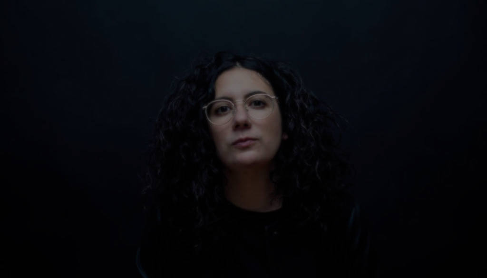

Photo of Alexandra Streliski
Alexandra Stréliski
Neo-classical composer and pianist
One of the rare women in the neoclassical world, Alexandra Stréliski is hardly a conventional pianist. Hailing from a classical background yet free-spirited, she creates music that enthralls listeners, filling their minds with rich, cinematic images.
She made her debut with the album Pianoscope in 2010, but the general public discovered her via Jean-Marc Vallée’s films Dallas Buyers Club (2013) and Demolition (2016) and, more recently, the trailer of the Quebec director’s acclaimed HBO series Big Little Lies (2017).
Building on this momentum, the composer and musician is now fully prepared to make her next artistic statement with the album Inscape, due out on Secret City Records.